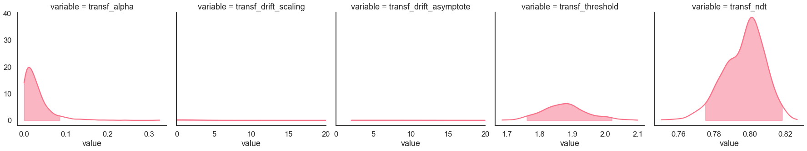
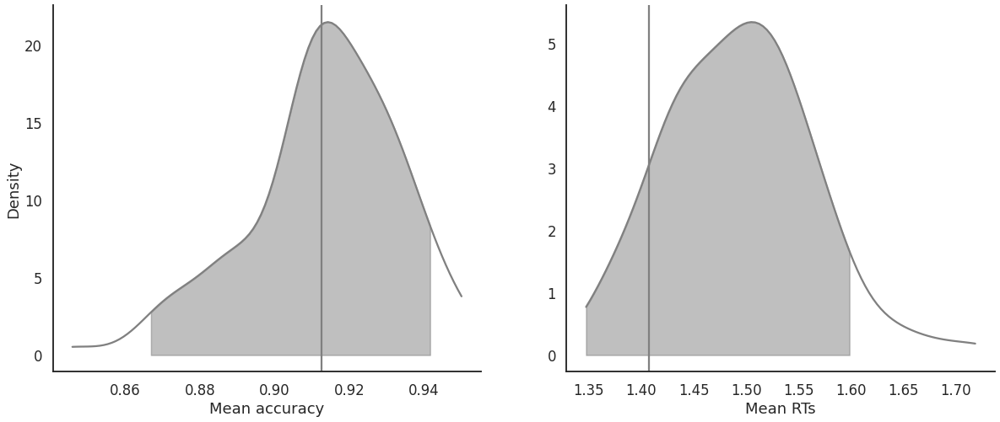
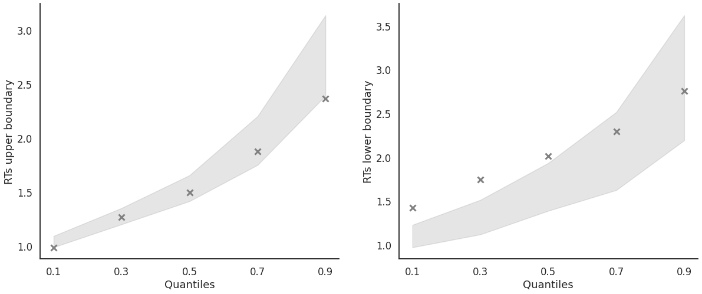
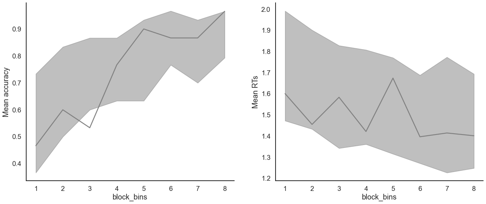
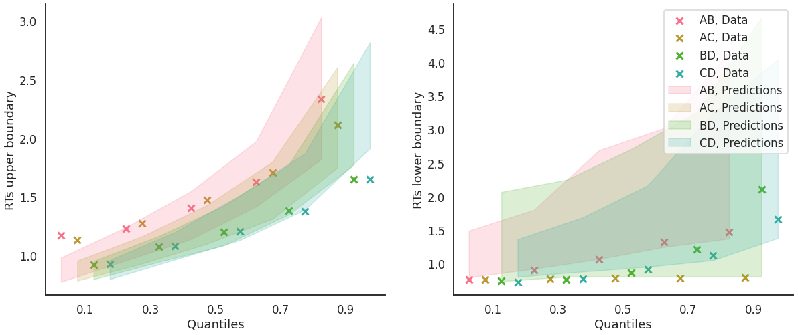
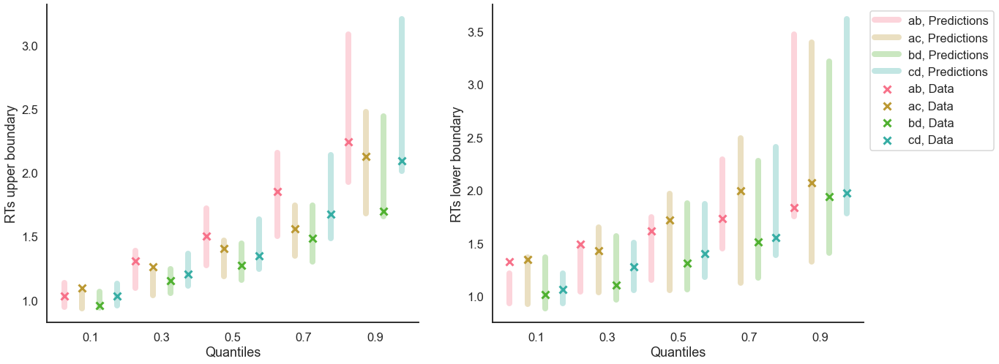

Fit the RLDDM on individual data
[1]:
import rlssm
import pandas as pd
Import the data
[2]:
# import some example data:
data = rlssm.load_example_dataset(hierarchical_levels = 1)
data.head()
[2]:
| participant | block_label | trial_block | f_cor | f_inc | cor_option | inc_option | times_seen | rt | accuracy | |
|---|---|---|---|---|---|---|---|---|---|---|
| 0 | 23 | 1 | 1 | 39 | 33 | 2 | 1 | 1 | 1.305523 | 0 |
| 1 | 23 | 1 | 2 | 50 | 41 | 3 | 1 | 1 | 0.916909 | 1 |
| 2 | 23 | 1 | 3 | 44 | 43 | 4 | 2 | 1 | 0.737469 | 0 |
| 3 | 23 | 1 | 4 | 51 | 30 | 3 | 1 | 2 | 0.764511 | 0 |
| 4 | 23 | 1 | 5 | 62 | 48 | 4 | 3 | 2 | 0.721492 | 1 |
Initialize the model
[3]:
# you can "turn on and off" different mechanisms:
model = rlssm.RLDDModel(hierarchical_levels=1,
separate_learning_rates=False,
threshold_modulation=False,
nonlinear_mapping=True)
20:55:30 - cmdstanpy - INFO - compiling stan file /home/andrei/PycharmProjects/rlssm/rlssm/stan_models/RLDDM/RLDDM_nonlin.stan to exe file /home/andrei/PycharmProjects/rlssm/rlssm/stan_models/RLDDM/RLDDM_nonlin
20:55:45 - cmdstanpy - INFO - compiled model executable: /home/andrei/PycharmProjects/rlssm/rlssm/stan_models/RLDDM/RLDDM_nonlin
20:55:45 - cmdstanpy - WARNING - Stan compiler has produced 12 warnings:
20:55:45 - cmdstanpy - WARNING -
--- Translating Stan model to C++ code ---
bin/stanc --o=/home/andrei/PycharmProjects/rlssm/rlssm/stan_models/RLDDM/RLDDM_nonlin.hpp /home/andrei/PycharmProjects/rlssm/rlssm/stan_models/RLDDM/RLDDM_nonlin.stan
Warning in '/home/andrei/PycharmProjects/rlssm/rlssm/stan_models/RLDDM/RLDDM_nonlin.stan', line 4, column 1: Declaration
of arrays by placing brackets after a variable name is deprecated and
will be removed in Stan 2.32.0. Instead use the array keyword before the
type. This can be changed automatically using the auto-format flag to
stanc
Warning in '/home/andrei/PycharmProjects/rlssm/rlssm/stan_models/RLDDM/RLDDM_nonlin.stan', line 7, column 1: Declaration
of arrays by placing brackets after a variable name is deprecated and
will be removed in Stan 2.32.0. Instead use the array keyword before the
type. This can be changed automatically using the auto-format flag to
stanc
Warning in '/home/andrei/PycharmProjects/rlssm/rlssm/stan_models/RLDDM/RLDDM_nonlin.stan', line 8, column 1: Declaration
of arrays by placing brackets after a variable name is deprecated and
will be removed in Stan 2.32.0. Instead use the array keyword before the
type. This can be changed automatically using the auto-format flag to
stanc
Warning in '/home/andrei/PycharmProjects/rlssm/rlssm/stan_models/RLDDM/RLDDM_nonlin.stan', line 9, column 1: Declaration
of arrays by placing brackets after a variable name is deprecated and
will be removed in Stan 2.32.0. Instead use the array keyword before the
type. This can be changed automatically using the auto-format flag to
stanc
Warning in '/home/andrei/PycharmProjects/rlssm/rlssm/stan_models/RLDDM/RLDDM_nonlin.stan', line 11, column 1: Declaration
of arrays by placing brackets after a variable name is deprecated and
will be removed in Stan 2.32.0. Instead use the array keyword before the
type. This can be changed automatically using the auto-format flag to
stanc
Warning in '/home/andrei/PycharmProjects/rlssm/rlssm/stan_models/RLDDM/RLDDM_nonlin.stan', line 12, column 1: Declaration
of arrays by placing brackets after a variable name is deprecated and
will be removed in Stan 2.32.0. Instead use the array keyword before the
type. This can be changed automatically using the auto-format flag to
stanc
Warning in '/home/andrei/PycharmProjects/rlssm/rlssm/stan_models/RLDDM/RLDDM_nonlin.stan', line 35, column 1: Declaration
of arrays by placing brackets after a variable name is deprecated and
will be removed in Stan 2.32.0. Instead use the array keyword before the
type. This can be changed automatically using the auto-format flag to
stanc
Warning in '/home/andrei/PycharmProjects/rlssm/rlssm/stan_models/RLDDM/RLDDM_nonlin.stan', line 36, column 1: Declaration
of arrays by placing brackets after a variable name is deprecated and
will be removed in Stan 2.32.0. Instead use the array keyword before the
type. This can be changed automatically using the auto-format flag to
stanc
Warning in '/home/andrei/PycharmProjects/rlssm/rlssm/stan_models/RLDDM/RLDDM_nonlin.stan', line 37, column 1: Declaration
of arrays by placing brackets after a variable name is deprecated and
will be removed in Stan 2.32.0. Instead use the array keyword before the
type. This can be changed automatically using the auto-format flag to
stanc
Warning in '/home/andrei/PycharmProjects/rlssm/rlssm/stan_models/RLDDM/RLDDM_nonlin.stan', line 38, column 1: Declaration
of arrays by placing brackets after a variable name is deprecated and
will be removed in Stan 2.32.0. Instead use the array keyword before the
type. This can be changed automatically using the auto-format flag to
stanc
Warning in '/home/andrei/PycharmProjects/rlssm/rlssm/stan_models/RLDDM/RLDDM_nonlin.stan', line 43, column 1: Declaration
of arrays by placing brackets after a variable name is deprecated and
will be removed in Stan 2.32.0. Instead use the array keyword before the
type. This can be changed automatically using the auto-format flag to
stanc
Warning in '/home/andrei/PycharmProjects/rlssm/rlssm/stan_models/RLDDM/RLDDM_nonlin.stan', line 44, column 1: Declaration
of arrays by placing brackets after a variable name is deprecated and
will be removed in Stan 2.32.0. Instead use the array keyword before the
type. This can be changed automatically using the auto-format flag to
stanc
--- Compiling, linking C++ code ---
g++ -std=c++1y -pthread -D_REENTRANT -Wno-sign-compare -Wno-ignored-attributes -I stan/lib/stan_math/lib/tbb_2020.3/include -O3 -I src -I stan/src -I lib/rapidjson_1.1.0/ -I lib/CLI11-1.9.1/ -I stan/lib/stan_math/ -I stan/lib/stan_math/lib/eigen_3.3.9 -I stan/lib/stan_math/lib/boost_1.78.0 -I stan/lib/stan_math/lib/sundials_6.1.1/include -I stan/lib/stan_math/lib/sundials_6.1.1/src/sundials -DBOOST_DISABLE_ASSERTS -c -Wno-ignored-attributes -x c++ -o /home/andrei/PycharmProjects/rlssm/rlssm/stan_models/RLDDM/RLDDM_nonlin.o /home/andrei/PycharmProjects/rlssm/rlssm/stan_models/RLDDM/RLDDM_nonlin.hpp
g++ -std=c++1y -pthread -D_REENTRANT -Wno-sign-compare -Wno-ignored-attributes -I stan/lib/stan_math/lib/tbb_2020.3/include -O3 -I src -I stan/src -I lib/rapidjson_1.1.0/ -I lib/CLI11-1.9.1/ -I stan/lib/stan_math/ -I stan/lib/stan_math/lib/eigen_3.3.9 -I stan/lib/stan_math/lib/boost_1.78.0 -I stan/lib/stan_math/lib/sundials_6.1.1/include -I stan/lib/stan_math/lib/sundials_6.1.1/src/sundials -DBOOST_DISABLE_ASSERTS -Wl,-L,"/home/andrei/.cmdstan/cmdstan-2.30.0/stan/lib/stan_math/lib/tbb" -Wl,-rpath,"/home/andrei/.cmdstan/cmdstan-2.30.0/stan/lib/stan_math/lib/tbb" /home/andrei/PycharmProjects/rlssm/rlssm/stan_models/RLDDM/RLDDM_nonlin.o src/cmdstan/main.o -Wl,-L,"/home/andrei/.cmdstan/cmdstan-2.30.0/stan/lib/stan_math/lib/tbb" -Wl,-rpath,"/home/andrei/.cmdstan/cmdstan-2.30.0/stan/lib/stan_math/lib/tbb" stan/lib/stan_math/lib/sundials_6.1.1/lib/libsundials_nvecserial.a stan/lib/stan_math/lib/sundials_6.1.1/lib/libsundials_cvodes.a stan/lib/stan_math/lib/sundials_6.1.1/lib/libsundials_idas.a stan/lib/stan_math/lib/sundials_6.1.1/lib/libsundials_kinsol.a stan/lib/stan_math/lib/tbb/libtbb.so.2 -o /home/andrei/PycharmProjects/rlssm/rlssm/stan_models/RLDDM/RLDDM_nonlin
rm -f /home/andrei/PycharmProjects/rlssm/rlssm/stan_models/RLDDM/RLDDM_nonlin.o
Fit
[4]:
# sampling parameters
n_warmup = 1000
n_sampling = 3000
n_chains = 2
# learning parameters
K = 4 # n options in a learning block (participants see 2 at a time)
initial_value_learning = 27.5 # intitial learning value (Q0)
[5]:
model_fit = model.fit(
data,
K,
initial_value_learning,
iter_warmup=n_warmup,
iter_sampling=n_sampling,
chains = n_chains)
20:55:46 - cmdstanpy - INFO - CmdStan start processing
Fitting the model using the priors:
alpha_priors {'mu': 0, 'sd': 1}
drift_scaling_priors {'mu': 1, 'sd': 50}
drift_asymptote_priors {'mu': 1, 'sd': 50}
threshold_priors {'mu': 1, 'sd': 5}
ndt_priors {'mu': 1, 'sd': 1}
20:56:33 - cmdstanpy - INFO - CmdStan done processing.
20:56:33 - cmdstanpy - WARNING - Non-fatal error during sampling:
Exception: wiener_lpdf: Random variable = 1.30552, but must be greater than nondecision time = 1.34712 (in '/home/andrei/PycharmProjects/rlssm/rlssm/stan_models/RLDDM/RLDDM_nonlin.stan', line 90, column 1 to column 59)
Exception: wiener_lpdf: Random variable = 1.30552, but must be greater than nondecision time = 1.31069 (in '/home/andrei/PycharmProjects/rlssm/rlssm/stan_models/RLDDM/RLDDM_nonlin.stan', line 90, column 1 to column 59)
Exception: wiener_lpdf: Random variable = 1.30552, but must be greater than nondecision time = 1.95521 (in '/home/andrei/PycharmProjects/rlssm/rlssm/stan_models/RLDDM/RLDDM_nonlin.stan', line 90, column 1 to column 59)
Exception: wiener_lpdf: Boundary separation[1] is inf, but must be positive finite! (in '/home/andrei/PycharmProjects/rlssm/rlssm/stan_models/RLDDM/RLDDM_nonlin.stan', line 90, column 1 to column 59)
Exception: wiener_lpdf: Boundary separation[1] is inf, but must be positive finite! (in '/home/andrei/PycharmProjects/rlssm/rlssm/stan_models/RLDDM/RLDDM_nonlin.stan', line 90, column 1 to column 59)
Exception: wiener_lpdf: Random variable = 1.30552, but must be greater than nondecision time = 46.5329 (in '/home/andrei/PycharmProjects/rlssm/rlssm/stan_models/RLDDM/RLDDM_nonlin.stan', line 90, column 1 to column 59)
Exception: wiener_lpdf: Random variable = 1.30552, but must be greater than nondecision time = 10.9202 (in '/home/andrei/PycharmProjects/rlssm/rlssm/stan_models/RLDDM/RLDDM_nonlin.stan', line 90, column 1 to column 59)
Exception: wiener_lpdf: Random variable = 1.30552, but must be greater than nondecision time = 2.09381 (in '/home/andrei/PycharmProjects/rlssm/rlssm/stan_models/RLDDM/RLDDM_nonlin.stan', line 90, column 1 to column 59)
Exception: wiener_lpdf: Boundary separation[1] is inf, but must be positive finite! (in '/home/andrei/PycharmProjects/rlssm/rlssm/stan_models/RLDDM/RLDDM_nonlin.stan', line 90, column 1 to column 59)
Exception: wiener_lpdf: Random variable = 1.30552, but must be greater than nondecision time = 106.803 (in '/home/andrei/PycharmProjects/rlssm/rlssm/stan_models/RLDDM/RLDDM_nonlin.stan', line 90, column 1 to column 59)
Exception: wiener_lpdf: Random variable = 0.683038, but must be greater than nondecision time = 0.705486 (in '/home/andrei/PycharmProjects/rlssm/rlssm/stan_models/RLDDM/RLDDM_nonlin.stan', line 90, column 1 to column 59)
Exception: wiener_lpdf: Random variable = 0.66953, but must be greater than nondecision time = 0.676328 (in '/home/andrei/PycharmProjects/rlssm/rlssm/stan_models/RLDDM/RLDDM_nonlin.stan', line 90, column 1 to column 59)
Exception: wiener_lpdf: Random variable = 0.66953, but must be greater than nondecision time = 0.682336 (in '/home/andrei/PycharmProjects/rlssm/rlssm/stan_models/RLDDM/RLDDM_nonlin.stan', line 90, column 1 to column 59)
Exception: wiener_lpdf: Random variable = 0.737469, but must be greater than nondecision time = 0.874091 (in '/home/andrei/PycharmProjects/rlssm/rlssm/stan_models/RLDDM/RLDDM_nonlin.stan', line 90, column 1 to column 59)
Exception: wiener_lpdf: Random variable = 0.916909, but must be greater than nondecision time = 1.07476 (in '/home/andrei/PycharmProjects/rlssm/rlssm/stan_models/RLDDM/RLDDM_nonlin.stan', line 90, column 1 to column 59)
Exception: wiener_lpdf: Random variable = 0.683038, but must be greater than nondecision time = 0.72013 (in '/home/andrei/PycharmProjects/rlssm/rlssm/stan_models/RLDDM/RLDDM_nonlin.stan', line 90, column 1 to column 59)
Exception: wiener_lpdf: Boundary separation[1] is inf, but must be positive finite! (in '/home/andrei/PycharmProjects/rlssm/rlssm/stan_models/RLDDM/RLDDM_nonlin.stan', line 90, column 1 to column 59)
Exception: wiener_lpdf: Boundary separation[1] is inf, but must be positive finite! (in '/home/andrei/PycharmProjects/rlssm/rlssm/stan_models/RLDDM/RLDDM_nonlin.stan', line 90, column 1 to column 59)
Exception: wiener_lpdf: Boundary separation[1] is inf, but must be positive finite! (in '/home/andrei/PycharmProjects/rlssm/rlssm/stan_models/RLDDM/RLDDM_nonlin.stan', line 90, column 1 to column 59)
Exception: wiener_lpdf: Boundary separation[1] is inf, but must be positive finite! (in '/home/andrei/PycharmProjects/rlssm/rlssm/stan_models/RLDDM/RLDDM_nonlin.stan', line 90, column 1 to column 59)
Exception: wiener_lpdf: Random variable = 1.30552, but must be greater than nondecision time = 43.741 (in '/home/andrei/PycharmProjects/rlssm/rlssm/stan_models/RLDDM/RLDDM_nonlin.stan', line 90, column 1 to column 59)
Exception: wiener_lpdf: Random variable = 1.30552, but must be greater than nondecision time = 10.2331 (in '/home/andrei/PycharmProjects/rlssm/rlssm/stan_models/RLDDM/RLDDM_nonlin.stan', line 90, column 1 to column 59)
Exception: wiener_lpdf: Random variable = 1.30552, but must be greater than nondecision time = 2.01311 (in '/home/andrei/PycharmProjects/rlssm/rlssm/stan_models/RLDDM/RLDDM_nonlin.stan', line 90, column 1 to column 59)
Exception: wiener_lpdf: Boundary separation[1] is inf, but must be positive finite! (in '/home/andrei/PycharmProjects/rlssm/rlssm/stan_models/RLDDM/RLDDM_nonlin.stan', line 90, column 1 to column 59)
Exception: wiener_lpdf: Boundary separation[1] is inf, but must be positive finite! (in '/home/andrei/PycharmProjects/rlssm/rlssm/stan_models/RLDDM/RLDDM_nonlin.stan', line 90, column 1 to column 59)
Exception: wiener_lpdf: Random variable = 1.30552, but must be greater than nondecision time = 28.3932 (in '/home/andrei/PycharmProjects/rlssm/rlssm/stan_models/RLDDM/RLDDM_nonlin.stan', line 90, column 1 to column 59)
Exception: wiener_lpdf: Random variable = 0.737469, but must be greater than nondecision time = 0.770574 (in '/home/andrei/PycharmProjects/rlssm/rlssm/stan_models/RLDDM/RLDDM_nonlin.stan', line 90, column 1 to column 59)
Exception: wiener_lpdf: Random variable = 0.683038, but must be greater than nondecision time = 0.706193 (in '/home/andrei/PycharmProjects/rlssm/rlssm/stan_models/RLDDM/RLDDM_nonlin.stan', line 90, column 1 to column 59)
Exception: wiener_lpdf: Random variable = 0.683038, but must be greater than nondecision time = 0.718125 (in '/home/andrei/PycharmProjects/rlssm/rlssm/stan_models/RLDDM/RLDDM_nonlin.stan', line 90, column 1 to column 59)
Exception: wiener_lpdf: Random variable = 0.683038, but must be greater than nondecision time = 0.719809 (in '/home/andrei/PycharmProjects/rlssm/rlssm/stan_models/RLDDM/RLDDM_nonlin.stan', line 90, column 1 to column 59)
Exception: wiener_lpdf: Random variable = 0.737469, but must be greater than nondecision time = 0.798943 (in '/home/andrei/PycharmProjects/rlssm/rlssm/stan_models/RLDDM/RLDDM_nonlin.stan', line 90, column 1 to column 59)
Exception: wiener_lpdf: Random variable = 0.721492, but must be greater than nondecision time = 0.729276 (in '/home/andrei/PycharmProjects/rlssm/rlssm/stan_models/RLDDM/RLDDM_nonlin.stan', line 90, column 1 to column 59)
Consider re-running with show_console=True if the above output is unclear!
Checks MCMC diagnostics:
n_eff / iter looks reasonable for all parameters
0 of 6000 iterations saturated the maximum tree depth of 10 (0.0%)
E-BFMI indicated no pathological behavior
0.0 of 6000 iterations ended with a divergence (0.0%)
get Rhat
[6]:
model_fit.rhat
[6]:
| rhat | variable | |
|---|---|---|
| name | ||
| lp__ | 1.000440 | lp__ |
| alpha | 1.000660 | alpha |
| drift_scaling | 1.000690 | drift_scaling |
| drift_asymptote | 0.999863 | drift_asymptote |
| threshold | 1.000400 | threshold |
| ... | ... | ... |
| log_lik[236] | 1.000330 | log_lik[236] |
| log_lik[237] | 1.000170 | log_lik[237] |
| log_lik[238] | 0.999742 | log_lik[238] |
| log_lik[239] | 0.999767 | log_lik[239] |
| log_lik[240] | 1.000030 | log_lik[240] |
1698 rows × 2 columns
get wAIC
[7]:
model_fit.waic
[7]:
{'lppd': -198.22569479465193,
'p_waic': 4.416801750856384,
'waic': 405.28499309101664,
'waic_se': 30.95639999720455}
Posteriors
[8]:
model_fit.samples.describe()
[8]:
| transf_alpha | transf_drift_scaling | transf_drift_asymptote | transf_threshold | transf_ndt | |
|---|---|---|---|---|---|
| count | 6000.000000 | 6000.000000 | 6000.000000 | 6000.000000 | 6000.000000 |
| mean | 0.054416 | 1.144963 | 2.926137 | 2.418319 | 0.567141 |
| std | 0.024692 | 0.624364 | 0.237828 | 0.114478 | 0.018212 |
| min | 0.006909 | 0.340403 | 2.099260 | 2.063650 | 0.472677 |
| 25% | 0.036493 | 0.770248 | 2.761048 | 2.340402 | 0.555944 |
| 50% | 0.049934 | 0.986978 | 2.922475 | 2.415285 | 0.568367 |
| 75% | 0.068047 | 1.312710 | 3.081085 | 2.490780 | 0.579732 |
| max | 0.212006 | 7.341780 | 3.867390 | 2.877720 | 0.621074 |
[9]:
import seaborn as sns
sns.set(context = "talk",
style = "white",
palette = "husl",
rc={'figure.figsize':(15, 8)})
[10]:
g = model_fit.plot_posteriors(height=5, show_intervals='HDI');
g.axes.flat[1].set_xlim(0, 20)
g.axes.flat[2].set_xlim(0, 20);

Posterior predictives
Ungrouped
[11]:
pp = model_fit.get_posterior_predictives_df(n_posterior_predictives=100)
pp
[11]:
| variable | rt | ... | accuracy | ||||||||||||||||||
|---|---|---|---|---|---|---|---|---|---|---|---|---|---|---|---|---|---|---|---|---|---|
| trial | 1 | 2 | 3 | 4 | 5 | 6 | 7 | 8 | 9 | 10 | ... | 231 | 232 | 233 | 234 | 235 | 236 | 237 | 238 | 239 | 240 |
| sample | |||||||||||||||||||||
| 1 | 1.271936 | 1.338936 | 0.988936 | 3.170936 | 1.777936 | 2.086936 | 1.591936 | 1.986936 | 2.352936 | 1.616936 | ... | 1.0 | 1.0 | 1.0 | 1.0 | 1.0 | 1.0 | 1.0 | 1.0 | 1.0 | 1.0 |
| 2 | 1.793824 | 1.263824 | 0.957824 | 1.000824 | 1.451824 | 1.151824 | 1.106824 | 0.835824 | 1.000824 | 0.737824 | ... | 1.0 | 1.0 | 1.0 | 1.0 | 1.0 | 1.0 | 1.0 | 1.0 | 1.0 | 1.0 |
| 3 | 2.800606 | 1.493606 | 1.642606 | 1.498606 | 0.902606 | 1.686606 | 2.923606 | 2.151606 | 2.208606 | 3.508606 | ... | 1.0 | 1.0 | 1.0 | 1.0 | 1.0 | 1.0 | 1.0 | 1.0 | 1.0 | 1.0 |
| 4 | 1.584870 | 2.088870 | 3.519870 | 1.206870 | 2.887870 | 1.534870 | 1.893870 | 3.507870 | 6.151870 | 8.966870 | ... | 1.0 | 1.0 | 1.0 | 1.0 | 1.0 | 1.0 | 1.0 | 1.0 | 1.0 | 1.0 |
| 5 | 2.112332 | 3.057332 | 2.434332 | 1.903332 | 0.991332 | 0.871332 | 2.267332 | 0.806332 | 2.108332 | 0.954332 | ... | 1.0 | 1.0 | 1.0 | 1.0 | 1.0 | 1.0 | 1.0 | 1.0 | 1.0 | 1.0 |
| ... | ... | ... | ... | ... | ... | ... | ... | ... | ... | ... | ... | ... | ... | ... | ... | ... | ... | ... | ... | ... | ... |
| 96 | 1.903858 | 4.247858 | 1.336858 | 0.985858 | 1.055858 | 1.144858 | 0.978858 | 1.929858 | 3.105858 | 3.563858 | ... | 1.0 | 1.0 | 1.0 | 0.0 | 1.0 | 1.0 | 1.0 | 1.0 | 1.0 | 1.0 |
| 97 | 1.056122 | 2.126122 | 1.289122 | 2.363122 | 1.362122 | 1.412122 | 1.323122 | 1.380122 | 1.039122 | 4.533122 | ... | 1.0 | 1.0 | 1.0 | 1.0 | 0.0 | 1.0 | 1.0 | 1.0 | 1.0 | 1.0 |
| 98 | 3.317311 | 1.100311 | 1.091311 | 1.969311 | 2.699311 | 0.930311 | 3.068311 | 1.745311 | 3.817311 | 2.012311 | ... | 1.0 | 1.0 | 1.0 | 1.0 | 1.0 | 1.0 | 1.0 | 1.0 | 1.0 | 1.0 |
| 99 | 1.394582 | 3.668582 | 0.971582 | 3.922582 | 1.123582 | 1.093582 | 5.577582 | 1.490582 | 1.446582 | 0.904582 | ... | 1.0 | 1.0 | 1.0 | 1.0 | 1.0 | 1.0 | 1.0 | 1.0 | 1.0 | 1.0 |
| 100 | 3.381681 | 1.314681 | 2.049681 | 2.396681 | 2.953681 | 1.486681 | 1.008681 | 3.194681 | 1.362681 | 1.801681 | ... | 1.0 | 1.0 | 1.0 | 1.0 | 1.0 | 1.0 | 1.0 | 1.0 | 1.0 | 1.0 |
100 rows × 480 columns
[12]:
pp_summary = model_fit.get_posterior_predictives_summary(n_posterior_predictives=100)
pp_summary
[12]:
| mean_accuracy | mean_rt | skewness | quant_10_rt_low | quant_30_rt_low | quant_50_rt_low | quant_70_rt_low | quant_90_rt_low | quant_10_rt_up | quant_30_rt_up | quant_50_rt_up | quant_70_rt_up | quant_90_rt_up | |
|---|---|---|---|---|---|---|---|---|---|---|---|---|---|
| sample | |||||||||||||
| 1 | 0.895833 | 1.531569 | 4.121805 | 0.879936 | 1.083336 | 1.415936 | 1.587136 | 2.497136 | 0.898936 | 1.076336 | 1.286936 | 1.666936 | 2.430736 |
| 2 | 0.887500 | 1.413524 | 1.650714 | 0.860024 | 0.977824 | 1.244824 | 1.706424 | 2.057624 | 0.848224 | 0.999424 | 1.246824 | 1.518224 | 2.328624 |
| 3 | 0.920833 | 1.430106 | 1.556784 | 0.944606 | 1.183006 | 1.540606 | 1.927206 | 2.475606 | 0.879606 | 1.053606 | 1.248606 | 1.515606 | 2.163606 |
| 4 | 0.950000 | 1.601374 | 3.196510 | 0.971170 | 1.289670 | 1.440370 | 2.106970 | 2.439670 | 0.945670 | 1.161870 | 1.370370 | 1.715670 | 2.367970 |
| 5 | 0.895833 | 1.540315 | 1.680473 | 0.898532 | 1.188732 | 1.657332 | 2.212332 | 3.773332 | 0.833732 | 1.114532 | 1.307332 | 1.622332 | 2.358932 |
| ... | ... | ... | ... | ... | ... | ... | ... | ... | ... | ... | ... | ... | ... |
| 96 | 0.887500 | 1.516116 | 1.516777 | 0.992258 | 1.082258 | 1.316858 | 1.711658 | 3.100458 | 0.877258 | 1.056858 | 1.285858 | 1.636258 | 2.526058 |
| 97 | 0.908333 | 1.558810 | 3.691598 | 0.987622 | 1.447022 | 1.975122 | 2.346422 | 4.263622 | 0.840822 | 1.032522 | 1.309122 | 1.583822 | 2.124722 |
| 98 | 0.937500 | 1.513319 | 1.716013 | 1.212311 | 1.531311 | 1.845311 | 1.900711 | 2.774911 | 0.866911 | 1.056711 | 1.287311 | 1.647711 | 2.332511 |
| 99 | 0.900000 | 1.466690 | 1.957417 | 1.032382 | 1.217882 | 1.406082 | 1.714982 | 2.488382 | 0.843082 | 1.074582 | 1.225082 | 1.559582 | 2.252082 |
| 100 | 0.929167 | 1.613798 | 1.490843 | 0.918081 | 1.283281 | 1.620681 | 1.812081 | 2.443081 | 0.935281 | 1.157681 | 1.426681 | 1.816481 | 2.468281 |
100 rows × 13 columns
[13]:
model_fit.plot_mean_posterior_predictives(n_posterior_predictives=100, figsize=(20,8), show_intervals='HDI');

[14]:
model_fit.plot_quantiles_posterior_predictives(n_posterior_predictives=100, kind='shades');

Grouped
[15]:
import numpy as np
[16]:
# Define new grouping variables, in this case, for the different choice pairs, but any grouping var can do
data['choice_pair'] = 'AB'
data.loc[(data.cor_option == 3) & (data.inc_option == 1), 'choice_pair'] = 'AC'
data.loc[(data.cor_option == 4) & (data.inc_option == 2), 'choice_pair'] = 'BD'
data.loc[(data.cor_option == 4) & (data.inc_option == 3), 'choice_pair'] = 'CD'
data['block_bins'] = pd.cut(data.trial_block, 8, labels=np.arange(1, 9))
[17]:
model_fit.get_grouped_posterior_predictives_summary(
grouping_vars=['block_label', 'choice_pair'],
quantiles=[.3, .5, .7],
n_posterior_predictives=100)
[17]:
| mean_accuracy | mean_rt | skewness | quant_30_rt_low | quant_30_rt_up | quant_50_rt_low | quant_50_rt_up | quant_70_rt_low | quant_70_rt_up | |||
|---|---|---|---|---|---|---|---|---|---|---|---|
| block_label | choice_pair | sample | |||||||||
| 1 | AB | 1 | 0.75 | 1.528486 | 2.125816 | 1.131136 | 0.998936 | 1.239936 | 1.157936 | 2.178336 | 1.541136 |
| 2 | 0.85 | 1.674724 | 0.956828 | 1.332224 | 0.991424 | 1.599824 | 1.297824 | 2.173424 | 1.859824 | ||
| 3 | 0.95 | 1.362106 | 1.660316 | 2.222606 | 1.047606 | 2.222606 | 1.139606 | 2.222606 | 1.270206 | ||
| 4 | 0.80 | 2.003020 | 3.029053 | 2.180970 | 1.153370 | 3.738370 | 1.320370 | 5.537470 | 1.640870 | ||
| 5 | 0.85 | 1.403032 | 1.483178 | 1.198732 | 1.144932 | 1.220332 | 1.285332 | 1.666332 | 1.453332 | ||
| ... | ... | ... | ... | ... | ... | ... | ... | ... | ... | ... | ... |
| 3 | CD | 96 | 0.95 | 1.906108 | 1.303903 | 2.889858 | 1.299458 | 2.889858 | 1.576858 | 2.889858 | 2.057858 |
| 97 | 0.85 | 1.218072 | 1.145406 | 1.263922 | 0.933722 | 1.363122 | 1.108122 | 1.391922 | 1.351522 | ||
| 98 | 0.75 | 1.711861 | 1.400820 | 1.502111 | 1.141511 | 1.765311 | 1.357311 | 2.029311 | 1.667111 | ||
| 99 | 0.90 | 1.496032 | 1.770244 | 1.763282 | 1.131682 | 1.797082 | 1.254582 | 1.830882 | 1.559982 | ||
| 100 | 0.95 | 1.350431 | 2.199623 | 3.471681 | 0.958081 | 3.471681 | 1.132681 | 3.471681 | 1.400881 |
1200 rows × 9 columns
[18]:
model_fit.get_grouped_posterior_predictives_summary(
grouping_vars=['block_bins'],
quantiles=[.3, .5, .7],
n_posterior_predictives=100)
[18]:
| mean_accuracy | mean_rt | skewness | quant_30_rt_low | quant_30_rt_up | quant_50_rt_low | quant_50_rt_up | quant_70_rt_low | quant_70_rt_up | ||
|---|---|---|---|---|---|---|---|---|---|---|
| block_bins | sample | |||||||||
| 1 | 1 | 0.700000 | 1.664103 | 2.262957 | 1.059336 | 1.168936 | 1.539936 | 1.370936 | 1.723936 | 1.919936 |
| 2 | 0.700000 | 1.396591 | 2.278174 | 1.023824 | 0.989824 | 1.121824 | 1.241824 | 1.527024 | 1.414824 | |
| 3 | 0.566667 | 1.682073 | 1.391473 | 1.034806 | 1.176406 | 1.396606 | 1.375606 | 2.158206 | 1.666806 | |
| 4 | 0.766667 | 1.900137 | 0.864684 | 2.065270 | 1.222670 | 2.611870 | 1.563870 | 3.042470 | 1.944870 | |
| 5 | 0.500000 | 1.532999 | 2.369281 | 0.918132 | 1.229332 | 1.211332 | 1.376332 | 1.543732 | 1.786532 | |
| ... | ... | ... | ... | ... | ... | ... | ... | ... | ... | ... |
| 8 | 96 | 1.000000 | 1.396458 | 0.315311 | NaN | 1.074658 | NaN | 1.281858 | NaN | 1.689658 |
| 97 | 1.000000 | 1.359822 | 0.904828 | NaN | 1.052522 | NaN | 1.271122 | NaN | 1.536022 | |
| 98 | 0.966667 | 1.223811 | 1.092589 | 1.604311 | 0.925911 | 1.604311 | 1.175311 | 1.604311 | 1.284711 | |
| 99 | 1.000000 | 1.307915 | 0.470435 | NaN | 1.006382 | NaN | 1.154082 | NaN | 1.599582 | |
| 100 | 1.000000 | 1.409448 | 2.231213 | NaN | 0.966481 | NaN | 1.198181 | NaN | 1.363181 |
800 rows × 9 columns
[19]:
model_fit.plot_mean_grouped_posterior_predictives(grouping_vars=['block_bins'],
n_posterior_predictives=100,
figsize=(20,8));

[20]:
model_fit.plot_quantiles_grouped_posterior_predictives(n_posterior_predictives=100,
grouping_var='choice_pair',
kind='shades',
quantiles=[.1, .3, .5, .7, .9]);

[21]:
model_fit.plot_quantiles_grouped_posterior_predictives(
n_posterior_predictives=300,
grouping_var='choice_pair',
palette = sns.color_palette('husl'),
intervals_kws={'alpha': .3, 'lw':8},
hue_order=['AB', 'AC', 'BD', 'CD'],
hue_labels=['ab', 'ac', 'bd', 'cd']);
